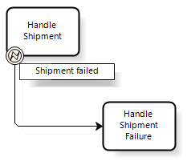
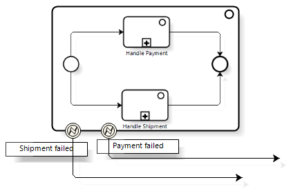
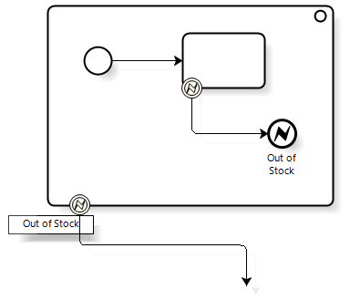
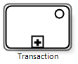
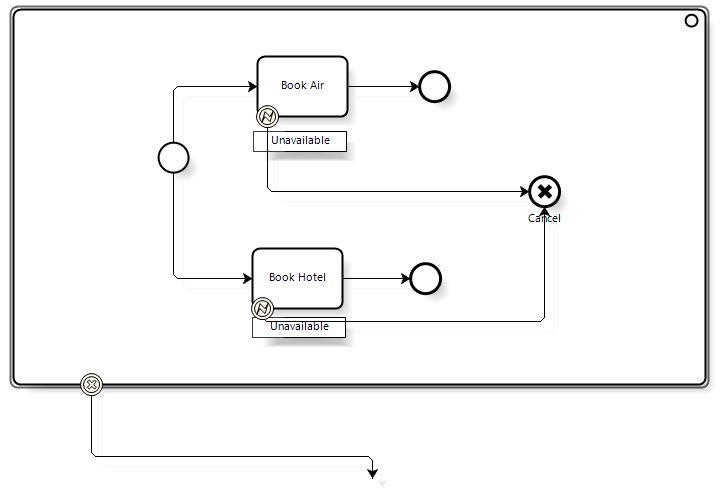
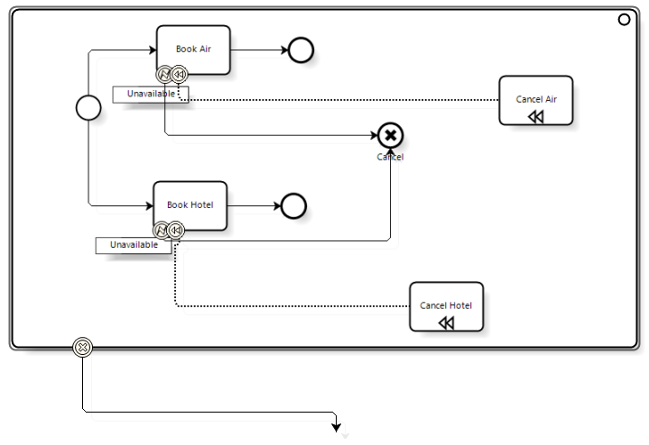
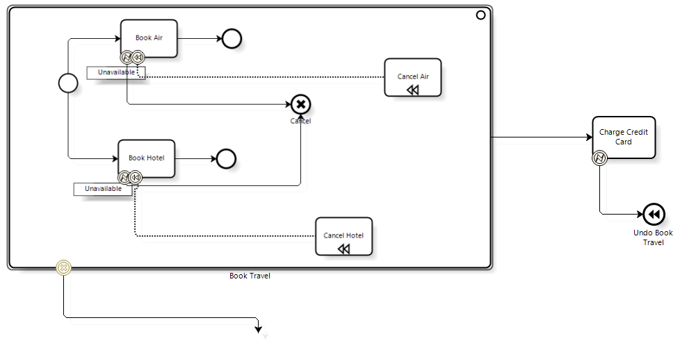

Error HandlingBPMN uses the Error Event to handle the occurrence of errors during the execution of a certain activity or at a certain point in the flow of a process. This event can be an Intermediate or an End Event. Error Intermediate EventError Intermediate Events can only be attached to an activity. This makes it possible to set an alternative path to handle the possible occurrence of an error during the execution of a task. The figure below shows an example of this modeling pattern:  In the previous case, if an error occurs during the execution of the "Handle shipment" activity, this error is caught by the attached Error Event, the activity is interrupted and the flow moves down the alternative path towards the "Handle Shipment Failure" activity. In general, various types of errors can occur during the execution of an activity. To catch a certain error, a code must be specified that identifies the error in the "ErrorCode" attribute of the Error Event. If no value is specified for "ErrorCode", the corresponding event will catch any error that occurs in the activity. According to the BPMN 2.0 specification, this attribute is of String type. If an error occurs in an activity and it isn’t caught using an intermediate event attached to the activity, the error propagates to the parent process of the process where the error occurred. In this case, the error may be caught as shown below:
 If the error isn’t caught in the parent process, it propagates to the following parent process and so on until it is caught or there aren't any more ancestors. It's important to make clear that the error can only be caught once (it is similar to the try/catch mechanisms of programming languages). Error End EventError End Events are used to indicate that a certain process path ends with an error. This error will propagate to the parent processes in the same way as in Error Intermediate Events. The figure below shows an example of this modeling pattern:  Transaction Sub-processesBPMN allows stating that an embedded sub-process can be considered as a transaction. That is to say, all the sub-process tasks must be completed correctly; otherwise the process is undone, which means that all the activities included in it are undone (rollback). A transaction sub-process is graphically represented with a double line boundary:  To indicate that an embedded sub-process is a transaction, the "Is Transaction" attribute of Boolean type is used. To indicate that an embedded transaction sub-process needs to be rolled back, the Cancel End Event is used. Therefore, these events are used to indicate the sub-process paths that end in the process rollback. The figure below shows an example of how it is used:  In the example above, if an error occurs due to lack of availability in any of the reservations, the flow moves down to a Cancel End Event. This will activate the process rollback and any reservation activity that has been completed will be undone. It should be pointed out that tasks are undone in the reverse order in which they were completed. In addition, a Cancel Intermediate Event can be attached to the embedded sub-process. Once the sub-process is undone, this enables the flow to continue down the path indicated by this event. Compensation of activities when doing a rollbackWhen a transaction sub-process is rolled back, specific actions may have to be performed to undo certain activities. Typically, the execution of these activities implies making changes to a database. To address these cases, each activity of the sub-process can be associated with a compensation activity. This association is performed through the Compensation Intermediate Event as shown in the example below:  In the above example, each reservation activity is associated with a compensation task that will undo the activity with which it is associated. Note that compensation activities are connected to the compensation events using association connectors –not sequence connectors. In addition, these activities cannot be part of any sequence flow, that is, they can't have incoming or outgoing sequence connectors. When a multiple activity is compensated, the corresponding compensation activity is executed once for each complete instance of the activity to compensate. Serious Errors (Hazards)It may happen that an error occurred in a transaction sub-process is too complicated to be fixed by the rollback mechanism. In these cases, a Cancel End Event is not used. Instead, the error is caught using an Error Event attached to the sub-process and is later handled by an alternative flow. Triggering compensation activities without a transactionThe Compensation End Event allows indicating that an activity must be compensated. The activity to be compensated must be identified with an event attribute –BPMN doesn’t specify which one should be used. This activity must be included in the same process as the Compensation End Event; in addition, it must have an attached compensation event. If the activity to compensate is not specified, all the activities that have been successfully completed and have an attached compensation event will be compensated. The figure below shows an example of this modeling pattern:  Go to the main article - Return to the previous section
|
| Backlinks | |
| Toc:GeneXus BPM Suite | Introduction to BPMN |
| Introduction to BPMN - Connectors | Introduction to BPMN - Events |